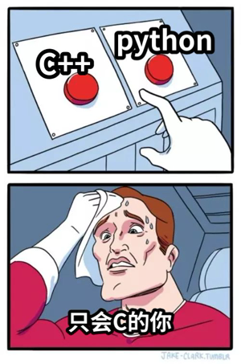
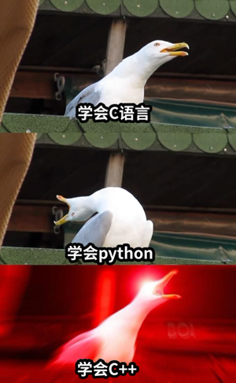

编程语言的使用
语言只是工具，能解决问题的工具就是好工具
概述
- Q1 shell的使用
- Q2 C->C++->python
- Q3 什么时候用什么语言

1：shell的使用？
为什么要先说shell?
shell 是早些年代（当然现在也用 的一款语言，
它会从

当然为了解shell的历史，还是得看看bash
也许是更好的文档(但全英文)
- 命令行输入
man sh
- 使用sh意味着我们无时无刻不在编程(
# ex1:我想知道某个程序运行的时间?
time <那个程序>
# ex2:我想关机?
poweroff
# 我还想...
- 试试fish
fish
fish_config
然后自己玩
- 也许不只是shell
# 类似shell的方式使用python3
python3
# 对python而言。也许就像fish一样，有更好的交互方式。
# 安装ipython （少不了清华源）
pip3 install ipython -i https://pypi.tuna.tsinghua.edu.cn/simple
ipython
也许ipython可以让你重新认识python
2：C->C++->python

C适合做什么?
接近底层的低抽象程序设计。
个人观点：用C语言写数学题完全是
C语言做底层封装更合适，比如
封装大数 内存分配器 线程池
简单来说，C语言的模型接近状态机，是控制状态的过程。
C++适合做什么?
高性能计算和高抽象设计
C++ 的抽象能力很强，有多种编程范式，面向对象，元编程，函数式编程。
- 最常用的面向对象，模型接近
行为树 。 - 元编程，即---编写
生成代码的代码 。 - 函数式编程，一切抽象为
表达式求值 。
C++适合设计，但它最大的毛病也在于此，限制太少，
容易写出满是bug的代码，所以不适合新手。
ps:已经会C语言就不是新手了
python适合做什么?
简单小巧的任务
比如计算。
> ipython
In [1]: from sympy import *
In [2]: x = symbols("x")
In [3]: y = (5**5)*atan(x)
In [4]: y
Out[4]: 3125*atan(x)
In [5]: y.diff()
Out[5]: 3125/(x**2 + 1)
In [6]: y.integrate()
Out[6]: 3125*x*atan(x) - 3125*log(x**2 + 1)/2
3：什么时候用什么语言
不要有语言歧视，每种语言都有适合自己的领域

C++可以应付大部分场景
- 但是如果涉及较多系统调用我会先考虑C语言
- 如果要做稍微复杂一点的计算，我会考虑python
- 如果要日常使用的命令我会选择shell（当然这个也算不得选择
接下来来点干货（推荐

-
shell
-
c++
-
python

最后希望大家使用更现代的工具，更好地编程（解决问题）